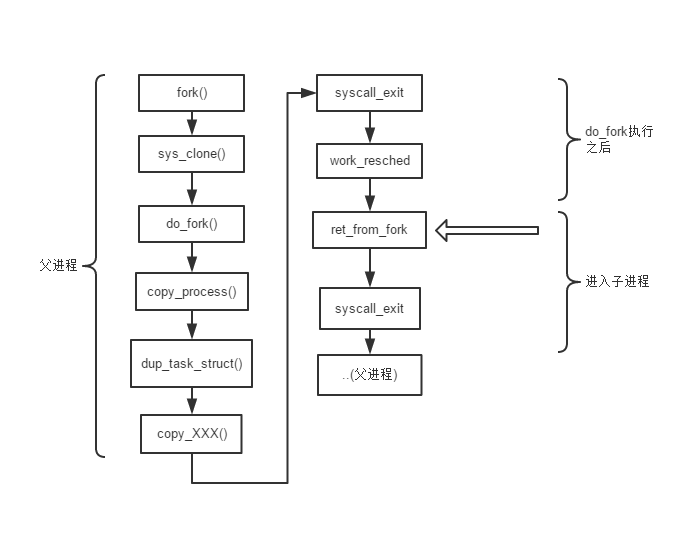

Linux内核分析作业6：分析Linux内核创建一个新进程的过程
朋翔 原创作品转载请注明出处《Linux内核分析》MOOC课程http://mooc.study.163.com/course/USTC-1000029000
一、过程整理
这里的过程大致上和第三次实验类似
具体不同就是需要将test_fork.c 替换为 test.c即可。
另外设置断点是现在 runinitprocess 设置了一个。
然后再设置do_fork那些。
不然半个小时之后才能进入想要的。
二、关于task_struct 结构
找到了这篇博客还是挺好的。介绍的很详细和全面
简单总结一下和 进程管理、内存管理、文件系统有关的主要部分:
进程状态
volatile long state; int exit_state;
这张图很经典：

进程标识符
/*一般情况 32768 个进程*/ pid_t pid; /*线程组的领头线程 getpid()返回值*/ pid_t tgid;进程调度
/* prio用于保存动态优先级 static_prio静态优先级 normal_prio的值取决于静态优先级和调度策略*/ int prio, static_prio, normal_prio; /*实时优先级*/ unsigned int rt_priority; /*调度类*/ const struct sched_class *sched_class; ？/*普通进程调用实体*/ struct sched_entity se; ？/*实时进程调用实体*/ struct sched_rt_entity rt; /*调度策略*/ unsigned int policy; /*控制进程可以在哪里处理器上运行*/ cpumask_t cpus_allowed;进程内核栈
/*指向下面的内核栈结构体的“栈底”*/ void *stack; /*内核栈结构体*/ union thread_union { struct thread_info thread_info; unsigned long stack[THREAD_SIZE/sizeof(long)]; //内核栈大小为THREAD_SIZE 一般为8K };
进程地址空间
/*mm指向进程所拥有的内存描述符。active_mm表示所使用的内存描述符*/ struct mm_struct *mm, *active_mm; /*记录堆栈随机化的信息，为了安全引入的*/ unsigned brk_randomized:1; /*进程缓存相关*/ struct task_rss_stat rss_stat;文件
/* 和文件系统相关的信息*/ int link_count, total_link_count; /* 进程当前和跟目录 */ struct fs_struct *fs; /* 已打开文件表*/ struct files_struct *files;
三、 创建一个新进程的过程
整体流程：

解释我遇到的两个问题：
第一个问题是 创建子进程之后是如何调度的？
其实上述流程图所示。
一般情况下。先运行父进程，在运行子进程。
父进程在给子进程的threadstruct中的ip 赋了retfrom_fork后。
他走完整个dofork（）后，会回到系统调用syscallexit退出。
还记得系统调用最后会进行调度。
调度到子进程。
这时候子进程从retfromfork执行后，也会进入syscall_exit
又重新进行了调度，把控制权交给了父进程。
所以先进行父进程的输出
（注：这只是我看代码的一种理解。我在猜想也有可能进程不进行调度）
第二个问题: 内存是怎么分配的。
这里涉及到了发现了两个知识点。
一个是伙伴系统进行内存分配。一个是slab分配器。
在duptaskstruct 中实现的。
为taskstruct 和 threadinfo 开辟内存
thread_info 就是之前有提过的内核栈。 具体情况见上图。
tsk = alloctaskstruct_node(node);
ti = allocthreadinfo_node(tsk, node);
这里 由于两个 数据结构 较小，而且分配的时候内存长度不变。因此都是slab分配器分配的。
主要是这两个地方要重新分配。
其他的地方通过copy_MM()共享同一空间就可以了。
最后说一下我对整个调用栈的理解。
copyprocess() 中的copythread()
threadstruct 这个结构非常重要 ，里面其实就是一个类似于ptregs 这个数据结构，记录和处理器相关的寄存器的值。
(注：我去查一下之前的内核版本信息。发现这个 taskstrutct 中的threadstruct thread 这个属性在Linux2.4.16叫 thread_struct tss。 tss 啊！！百度一下你就知道是什么了 里面就是记录了任务状态！所以对应的ip就是之前用户空间的ip！)
进程切换的时候。 linux会恢复cpu的内容，所以thread->ip自然就被恢复到eip寄存器中了
同时 copy_thread 里面的ax也要赋值为0.这样才会通过返回值区分父子进程
四、 总结
仔细琢磨就会发现原来，fork的父子进程都是用同样的代码。
但是。。写不下去了。。。。看的太累了